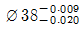
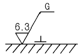
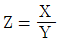
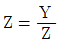
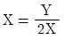
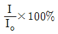
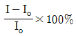
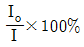
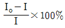

금속재료시험기능사 (2002-01-27 기출문제)
1과목: 금속재료일반
1. 금속간 화합물에 관한 설명 중 옳지 않은 것은?
- 금속간 화합물은 각성분의 특징이 없어진다.
- 어느성분의 금속보다도 단단하여진다.
- 일반적으로 각성분의 금속보다도 낮은 용융점을 갖는다.
- 일반화합물에 비하여 결합력이 약하다.
(정답률: 40%)

2. 용융점이 가장 낮은 것은?
- 철
- 코발트
- 카드뮴
- 텅스텐
(정답률: 68%)
3. 원소번호가 8 이고, 질량수가 16 인 것은?
- 질소
- 수소
- 탄소
- 산소
(정답률: 78%)
4. 반자성체로만 되어 있는 것은?
- Ni , Cu , Au
- Fe , Sb , Mn
- Fe , Ni , Co
- Bi , Hg , Ag
(정답률: 45%)
5. 텅스텐의 원소 기호는?
- W
- V
- P
- N
(정답률: 95%)
6. 열전도율(heat conductivity)의 단위로 옳은 것은?
- cal/g
- kg/cm2
- cal/cm∙sec∙℃
- kg·m
(정답률: 59%)
7. 면심입방격자결정 구조를 갖는 금속에서 슬립(slip)이 가장 용이하게 일어 나는 원자면은 ?
- [100]
- [011]
- [111]
- [112]
(정답률: 46%)
8. 금속의 가용성을 이용하여 2개의 금속을 반 영구적으로 접합하는 방법은?
- 용접
- 단조
- 전조
- 압연
(정답률: 89%)
9. 자성이 좋고 투자율이 높아 전자기용강으로 쓰이는 특수강은? (철 - 규소 - 알루미늄 합금임)
- 엘린바아
- 프라티나이트
- 스텔라이트
- 센더스터
(정답률: 37%)
10. 일반적인 합금강의 성질이 아닌 것은?
- 강도 및 경도가 커진다.
- 결정입도의 성장을 촉진한다.
- 담금질성을 향상시킨다.
- 내식, 내마멸성을 증대시킨다.
(정답률: 67%)
11. 일반적으로 가공한 재료를 고온으로 가열할 때 발생되지 않는 현상은?
- 결정입자의 성장
- 내부응력 제거
- 재결정
- 경화
(정답률: 37%)
12. 순철의 용융점(℃)은 약 어느 정도인가?
- 768
- 1013
- 1538
- 1780
(정답률: 62%)
13. 청동의 주성분은?
- 주석, 아연
- 구리, 크롬
- 구리, 주석
- 구리, 아연
(정답률: 80%)
14. 화학장치용, 원자로용 내식재료로 사용되며 내식성이 뛰어난 금속은?
- 마그네슘
- 지르코늄
- 납
- 주철
(정답률: 49%)
15. 철 - 탄소계의 공석반응에 해당되는 것은?
- γ(고용체) → α (고용체) + 시멘타이트
- L (액체) → γ(고용체) + 시멘타이트
- L (액체) → 레데뷰라이트
- α (고용체) → γ(고용체) + 시멘타이트
(정답률: 66%)
16. 모양에 따른 제도 선의 종류에 해당되지 않는 것은?
- 실선
- 사선
- 파선
- 쇄선
(정답률: 60%)
17. 물체의 보이지 않는 부분을 나타내는 데 사용되는 선은?
- 실선
- 파선
- 일점쇄선
- 이점쇄선
(정답률: 70%)
18. 다음 부품 중 길이 방향으로 절단하여 단면 도시할 수 있는 것은?
- 볼트
- 핀
- 중실축
- 파이프
(정답률: 61%)
19. 치수선을 긋는 방법 중 틀리게 설명한 것은?
- 외형선, 은선은 치수선으로 사용하지 않는다.
- 치수선은 될 수 있는대로 다른 치수선과 만나지 않도록 그어야 한다.
- 중심선, 치수보조선은 치수선으로 사용하여도 좋다.
- 이웃하는 치수선은 될 수 있는대로 일직선으로 가지런하게 긋는다.
(정답률: 56%)
20. 핸들이나 바퀴 등의 암 및 리브, 훅(hook), 축 등의 단면 도시는 어떤 단면도를 이용하는가?
- 온단면도
- 회전 도시 단면도
- 한쪽 단면도
- 부분 단면도
(정답률: 67%)
2과목: 금속제도
21. 구멍 또는 축의 공차표시로 잘못된 것은?
- ø35 e 8
- ø35 H 7

- ø38 A g 5
(정답률: 61%)
22. 구멍의 최대 허용치수 50.025 mm, 최소허용치수 50.000 mm, 축의 최대허용치수 50.000 mm, 최소허용치수 49.950 mm일 때 최대 틈새는?
- 0.025 mm
- 0.⑤0 mm
- 0.075 mm
- 0.015 mm
(정답률: 56%)
23. 다음 표면기호 기입에서 기호 G가 뜻하는 것은?

- 연삭가공(grinding)
- 선반가공(turning)
- 밀링가공(milling)
- 줄가공(filing)
(정답률: 77%)
24. A3 제도 용지의 크기는? (단, 단위는 mm)
- 594 × 841
- 420 × 594
- 297 × 420
- 210 × 297
(정답률: 72%)
25. 제도에서 간단한 도형이나 문자, 숫자, 기호 등을 기입할 때 간편하게 사용할 수 있는 제도 용구는?
- 형판(템플릿)
- 운형자
- 스케일
- 자유곡선자
(정답률: 39%)
26. 나사의 종류를 표시하는 기호에서 미터나사를 나타내는 기호는?
- M
- S
- UNC
- UNF
(정답률: 82%)
27. 물체의 특징을 잘 나타내는 한 면은 정투상으로 실제 모양으로 나타내고, 윗면이나 측면은 투상면에 경사시켜 입체적으로 나타내는 투상도는?
- 사투상도
- 등각투상도
- 부등각투상도
- 투시도
(정답률: 54%)
28. 강의 매크로조직 시험에서 수지상 결정이란?
- 강이 응고할 때 수지상으로 발달한 일차결정이 단조 또는 압연 후에도 그 형태를 그대로 가지고 있는 것
- 강의 응고 과정에서 결정 상태의 변화에 따라 윤곽상으로 부식의 농도차가 나타난 것
- 강의 응고 과정에서 성분편차에 따른 중심부에 부식의 농도차가 나타난 것
- 강의 응고 수축에 따른 파이프가 완전히 압착 되지 않고 그 흔적을 남긴 것
(정답률: 62%)
29. 자화력에 대한 자속밀도의 비 (B/H)를 나타내는 것은?
- 전도도 (conductivity)
- 저항 (resistivity)
- 리프트 오프(lift-off)
- 투자율 (permeability)
(정답률: 38%)
30. 현미경 조직 시험편 제작시 황동을 연마하는데 가장 좋은 연마제는?
- 산화철
- 산화니켈
- 산화구리
- 산화알루미늄
(정답률: 34%)
31. X선의 투과력은 무엇에 의해 결정되는가?
- KV 또는 파장
- 시간
- 전류
- 선원대 필름간 거리
(정답률: 53%)
32. 펄스 반복 주파수가 높고 감쇄가 적을 때 나타나는 것으로 결함 에코우는 아니나 결함 에코우처럼 보이는 것은?
- 쐐기안 에코우
- 표면 에코우
- 고우스트 에코우
- 느짐 에코우
(정답률: 64%)
33. 자분 탐상 검사의 자화법 중 표면 아래의 불연속에 대하여 가장 우수한 감도를 지니는 자화법은?
- 연속 자화
- 잔류 자화
- 원형 자화
- 선형 자화
(정답률: 64%)
34. 합금강의 설명 중 틀린 것은?
- 질량효과가 적다.
- 경화능이 적다.
- 열처리성이 좋다.
- 특수강이라고도 한다.
(정답률: 36%)
35. 고온 금속현미경의 장치가 아닌 것은?
- 금속 현미경
- 시료 가열장치
- 진공장치
- 냉각장치
(정답률: 54%)
36. 매크로 조직 검사법의 설명 중 틀린 것은?
- 육안 또는 10배 이내의 확대경으로 조직을 검사하는 것이다.
- 파단면 검사법, 설퍼프린트 등이 있다.
- 균열, 블로 홀, 편석 등의 금속 결함을 알 수 있다.
- 강의 페라이트 결정입도를 시험할 수 있다.
(정답률: 46%)
37. 오스테나이트 결정입도 시험에 대한 설명 중 틀린 것은?
- 결정입도는 강의 기계적 성질, 담금질성을 좌우한다.
- 상온에서 얻어지는 조직을 현미경으로 관찰하여 시험한다.
- 비교법, 평적법, 절단법 등이 있다.
- 850℃ 이상에서 시험한다.
(정답률: 43%)
38. 금속현미경의 대물렌즈 배율을 X, 접안렌즈 배율을 Y라고 하면 현미경의 배율 Z는?



- Z=X· Y
(정답률: 37%)
39. 현미경 조직시험을 할 때 가장 적당한 시편 채취법은?
- 시험편의 크기는 지름이 5[㎝]이상으로 한다.
- 결함이 발생하지 않은 부분에서 채취한다.
- 냉간압연 시편은 가공방향에 수직하게 채취한다.
- 일반적으로는 중앙부와 끝부분을 채취하나 결함 검사는 결함에 가까운 부분을 채취한다.
(정답률: 57%)
40. 다음 설명 중 가장 옳은 것은?
- 응력이 작은 범위에서 탄성은 일어나지 않는다.
- 영구변형이 생길 경우 최소값을 탄성한계라 한다.
- 탄성계수와 영율은 서로 다르며 정수로 표시하지 않는다.
- 연강에서 응력이 증가하면 변형도 증가한다.
(정답률: 44%)
3과목: 금속재료조직 및 비파괴시험
41. 피로시험기와 관련이 없는 것은?
- 인장압축
- 회전굽힘
- 비틀림
- 충격하중
(정답률: 36%)
42. 도장층이나 도금층의 경도 측정에 가장 적당한 것은?
- 록크웰경도기
- 브리넬경도기
- 마르텐스 경도기
- 쇼어 경도기
(정답률: 32%)
43. 비커스 경도시험에 관한 것 중 틀린 것은?
- 대각선의 길이는 시험기에 부착되어 있는 현미경으로 측정한다.
- 하중의 대소가 있더라도 그 값이 변하지 않기 때문에 정확한 결과를 얻는다.
- 재료의 경도 정도에 따라 1-120㎏f의 하중으로 시험할 수 있다.
- 얇은 물건, 표면경화재료, 용접부분의 경도 측정에는 좋지 않다.
(정답률: 51%)
44. 쇼어경도 시험의 특징이라 볼 수 없는 것은?
- 조작이 간편해서 신속히 경도를 측정할 수 있다.
- 압흔이 극히 적어 제품에 직접 검사 할 수 있다.
- 개인오차나 측정 오차가 나오기 쉽다.
- 시험하중을 바꾸어도 측정치에는 변화가 없다.
(정답률: 50%)
45. 브리넬(Brinell hardness) 시험에서 강구의 지름(D)을 흔적의 지름(d)으로 나눈 값의 범위로 가장 알맞는 것은?
- 0.2 - 0.5 D
- 0.5 - 1.0 D
- 1.0 - 2.0 D
- 3.0 - 4.0 D
(정답률: 32%)
46. X-선 사진으로부터 내부결함을 판별 할 수 있는 정도를 나타내는 방법에 사용되는 것은?
- 침전지
- 접촉판
- 투과도계
- 진동자
(정답률: 75%)
47. 방사선투과 시험에 사용되는 것은?
- 침투액
- 필름
- 접촉매질
- 자화분
(정답률: 69%)
48. 시험재에 전류를 통하거나 자석을 이용하여 표면의 결함을 검출하는 비파괴 시험법은?
- 방사선 투과시험
- 초음파 탐상시험
- 자분 탐상시험
- 액체침투 탐상시험
(정답률: 73%)
49. 시험체와 와전류탐상 프로브코일의 거리가 멀어져 감에 따라 출력신호가 변화하는 효과는?
- 단말효과(end effect)
- 리프트오프효과(lift off effect)
- 표피효과(skin effect)
- 속도효과(speed effect)
(정답률: 68%)
50. 시험 전의 원길이가 lo, 시험 후에 l로 될 때 연신율은?




(정답률: 63%)
51. 얇은 금속판의 전연성을 측정하기 위한 시험은?
- 피로시험
- 크리프시험
- 압축시험
- 에릭션시험
(정답률: 53%)
52. 불꽃시험 중 그라인더 사용에 대한 안전사항이 아닌 것은?
- 그라인더 사용시 근로안전 관리규칙을 준수한다.
- 그라인더 사용시 불꽃의 색, 밝기에 관계없이 밝은 장소에서 행한다.
- 그라인더 사용시 보안경을 착용한다.
- 그라인더 사용시 마스크를 착용한다.
(정답률: 74%)
53. 피로시험시 유의해야 할 안전사항 중 틀린 것은?
- 시험편이 움직이지 않도록 콜릿 척에 확실히 고정한다.
- 시험편의 중심과 지지점의 중심을 정확히 맞춘다.
- 시험기의 회전부분 및 슬라이딩 부분에 윤활유가 충분한지 확인한다.
- 시험편이 회전되지 않는 상태에서 하중을 건다.
(정답률: 70%)
54. 철강의 부식제로 사용되는 것은?
- 피크린산 알콜 용액
- 염산 용액, 진한 초산
- 염화 제2철, 초산
- 수산화나트륨, 왕수
(정답률: 40%)
55. 경도(시험)기 종류 중 압입체를 눌렀을 때 생기는 압입자국으로 경도를 측정하는 것은?
- 마이어 경도기
- 마텐스 경도기
- 쇼어 경도기
- 자기적 경도기
(정답률: 35%)
56. 초음파 탐상법 방식이 아닌 것은?
- 투과식
- 반사식
- 공진식
- 통전식
(정답률: 43%)
57. 작업장에서 대화를 나눌수 있는 데시벨(dB)은?
- 40
- 80
- 100
- 140
(정답률: 49%)
58. X선 탐상 시험시 방사선에 의한 해를 입지 않도록 시험실 주변의 방사선량을 수시로 측정할 때 쓰이는 것은?
- 계조계
- 서베이(survey) 미터
- 투과도계
- 가우스(Gauss) 미터
(정답률: 57%)
59. 가열된 강의 냉각법 3형태가 아닌 것은?
- 계단냉각
- 저온냉각
- 항온냉각
- 연속냉각
(정답률: 35%)
60. 안전교육의 3단계가 아닌 것은?
- 지식교육
- 역사교육
- 기능교육
- 태도교육
(정답률: 88%)